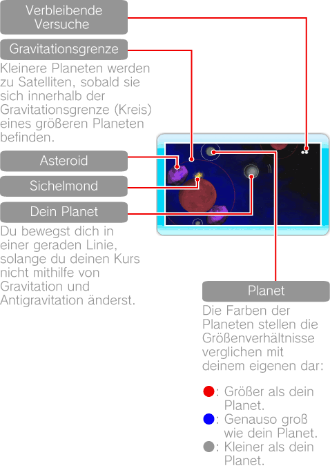
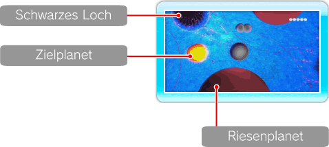
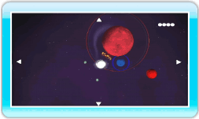

9 |
Spielbildschirm |
 |
Nur deine unmittelbare Umgebung wird auf dem Bildausschnitt angezeigt. Jede Stage wiederholt sich in alle Richtungen endlos. 


● Karte anzeigen Drücke während des Spielens 
● Pausenmenü Drücke während des Spielens
Hinweis: Die Anzahl deiner Versuche wird zurückgesetzt, wenn du eine Stage neu beginnst oder zur Stage-Auswahl zurückkehrst. |
 , um die Kamera frei durch die Stage bewegen zu können. Verschiebe den Bildausschnitt mithilfe von
, um die Kamera frei durch die Stage bewegen zu können. Verschiebe den Bildausschnitt mithilfe von  und drücke erneut auf
und drücke erneut auf  , um das Pausenmenü aufzurufen.
, um das Pausenmenü aufzurufen. |
 |
 |